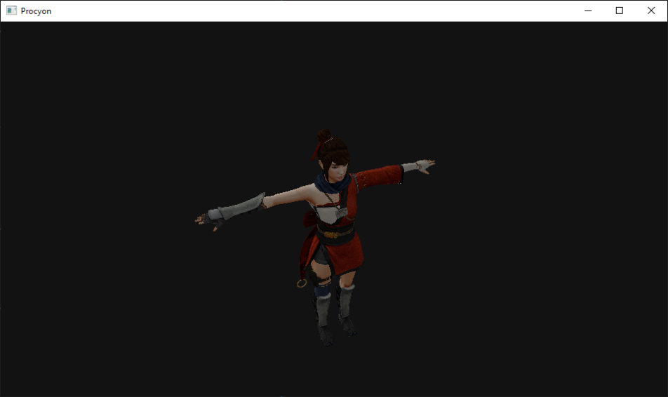
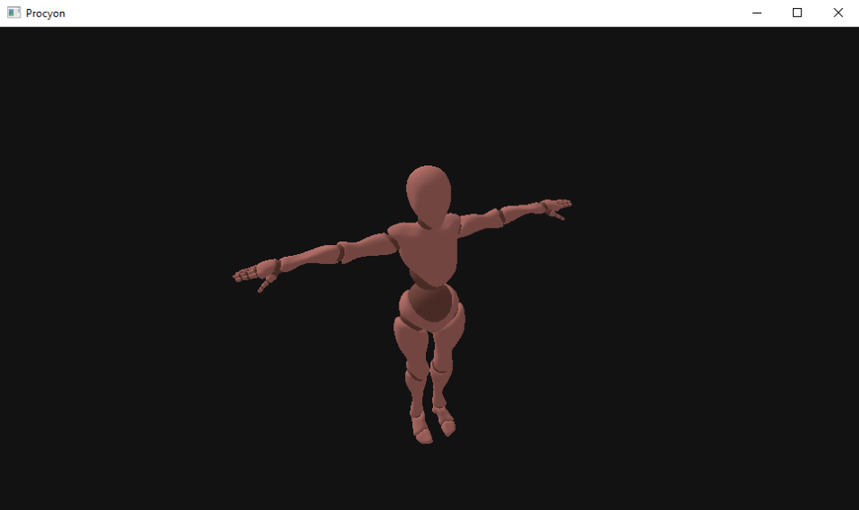

This is my current ongoing project in which I am trying to create a Co-Op Action-Adventure game for PC and PlayStation Portable. Why the PSP? Well, it was my first childhood console and also the reason I have started learning low-level programming in the first place.
I was moving out for work at the beginning of September and I knew the only piece of electronics I will have on me (for the first few weeks at least) is an old Thinkpad T430 which definitely won't be able to run Windows 10. I really wanted to continue working on the project so for the last 3 weeks I was porting the whole thing to Linux and OpenGL... Luckily most of the functionality was pretty simple to adapt, graphics were obviously the most difficult to implement - but I didn't need to do everything from scratch - I looked at what I've already done with Direct3D and tried to mimic it with OpenGL, making small adjustments on both sides throughout the process. Having another graphics backend also let me examine what is really happening behind the scenes and even eliminate some projection-related bugs.
For the last few weeks I've been working to implement skeletal animations on the PC. When doing this for the PSP the model exporting part was quite difficult, but the rendering part was pretty easy since the SDK takes care of the bone matrices for you. On PC it was the other way around - it didn't take much time to export the model data, but I did have to implement every transformations applied in the shader by myself - but it works!
With model rendering working on both PC and PSP its now time to work on skeletal animation. As it turns out its very easy to get the math wrong - one poorly constructed matrix and your character turns into a disorderly mess. Another issue that has to be addressed is the bone count. The model I am using for tests has 31 bones, while PSP has a hardware bone limit of 8. How I decided to go around this limitation is to group the bones together based on the triangles they control and then tried to merge them together to create subskeletons with bone counts lower than 8 that can then be rendered separately. It's basically a Bin Packing Problem with Overlapping Items. This problem is NP-hard so finding the optimal solution cannot be done in reasonable time - my algorithm is supposed to be ran every time a model is being exported, that's why I've settled with a greedy algorithm.
Using Model 3D (M3D) format turned out to be a bad idea. The exporter messes up the UVs on mesh triangulation and the loader doesn't quite work on the PSP... Thanks to Jacob's Blender Export Scripting Guide I was able to drop M3D dependency entirely and write my very own Blender exporter and model format - easy to load on PC and PSP. Right know I've got static mesh rendering on both platforms and about to work on skeletal animation next.
I've decided not to use Model 3D (M3D) format in the client app directly. To render a model on PC or PSP I need to convert the data from M3D's data representation to something the engine could use. I wasn't concerned too much about desktop platforms - there is plenty of CPU power to do necessary conversions, but on the PSP I don't have CPU power or large amounts of memory to deal with. I think what I am going to do about it is to create two custom model formats, one for PC and one for PSP. Each of the platforms would get a format that is easy for them to load, ideally with minimal CPU and memory overhead. I am not experienced enough to write an entire Blender Exporter from scratch, but since I've already learned how to use M3D format, I decided to create a conversion tool.
Once I've got basic network connection going on I thought it is time to work on rendering 3D models. I decided to use Model 3D SDK and file format, it promised small files and straightforward way to load models. With Model 3D I was able to load and display a textured model on PC.
 My biggest achievement with the project so far was getting PC and PSP client to connect to the same server. Networking abstraction, communication protocol and bit-serialization I have used in my Engineering Thesis were completely rewritten - two times actually - which reduced the amount of code and helped detect some bugs introduced when implementing everything for the first time.